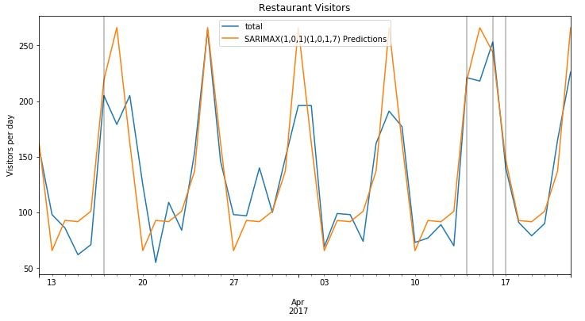

About Me
Work Experience
NBCUniversal, NY
Senior Data Analyst in Ad Sales Client Strategy (Mar 2018 - Present)
- Developed ARIMA and scenario models for forecasting Ad and Marketing revenue from key industries in NBCU’s Upfront, liaised with sales leads to build strategies that informed more than $6B of division revenue.
- Built sales prospecting tools in Python using regularized logistic regression. The model had a success rate of 85% and contributed towards generating new business. Managed the tool’s integration into NBCU’s CRM software.
- Developed the financial model for NBCU’s Direct-To-Consumer pitch which was used to allocate product offerings, staff and resources. The pitch led to an incremental $7M in yield and the model has been replicated with Sky teams.
- Cost-per-Acquisition analysis and scenario modeling for a key Direct-To-Consumer brand to better identify target consumers. Presented to the client’s CEO and CMO who went on to double their ad buy with us.
- Built key Sales KPI dashboards in PowerBI and trained more than 600 Sales staff on using technical material including the President of Ad Sales and senior leadership.
NBCUniversal, NY
Analytics Intern in Ad Sales Client Strategy (May 2017 - Aug 2017)
- Created a Markov chain attribution model over NBCU’s platforms in R (dplyr, markovchain).
Education
Columbia University, New York
M.S. in Operations Research (2016 - 17)
- Relevant courses: Optimization, Stochastic Models, Simulation, Machine Learning, Probability & Statistics, Business Analytics, Big Data in Finance, Applied Financial Risk Management, Quantitative Alpha Strategies, FX & Related Derivatives
University of Warwick, Coventry, UK
BSc in Economics (2012-15)
- Relevant courses: Mathematical Analysis, Statistical Techniques, Time Series Econometrics, Computing & Data Analysis, Macroeconomics, Microeconomics, Economic History, Investment Management, Derivatives & Risk Management, Principles of Finance, International Trade, Corporate Finance
FEATURED PROJECTS
Check out some of my projects below. To access all my work, click here.
-
Bayesian A/B Testing
Discovered the highest click-through-rate advertisement by using a Beta-Binomial conjugate model in Python.
-
Customer Segmentation
Analyzed online transactions data using RFM modeling and LTV analysis to better engage different customer segments.
-

Demand Forecasting
Forecasted sales for the Restaurants industry using Bayesian Sampling and Probabilistic Programming in PyTorch.
Contact
Feel free to reach out at:
anujay.shah@gmail.com
SKILLS
Programming: Python (scikit-learn, NumPy, Pandas, keras, PyTorch), R (tidyverse, dplyr), PostgreSQL
Data Visualization: Python (matplotlib, seaborn, bokeh), R (ggplot2, Shiny), Tableau (Server, Story, Prep), PowerBI, Microstrategy
Big Data/Other: Spark, Hadoop, Git, Advanced Excel (Pivot Tables, Power Query, Data Modeling in Power Pivot, VBA)